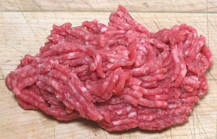

Ground Beef

[#136, #137; Minced Beef (UK)]
Ground beef can be made from any meaty part of the cow that is free of
bones, cartilage, tendons, lymph glands and heavy connective tissue.
It can be made from fresh beef or from a mix of fresh and frozen beef
to the extent allowed by the purchaser. Unless otherwise specified,
fat content can not exceed 22%, but in no case more than 30%. There are
a number of variations. The photo specimen is 30% fat, the most
flavorful mix.
The purchaser may specify that up to 20% of the product be Lean
Finely Textured Beef. Labeling must meet FSIS regulations. This has been
a bit out of style due to the silly "Pink Slime" brouhaha. Adding beef to
beef - my word!
#136A: Ground Beef and Vegetable Protein Product.
This is #136 mixed with VPP (Vegetable Protein Product). This is approved
for the Child Nutrition Program, provided the VPP meets USDA-FNS
nutritional standards. The mix of VPP and water added to the beef must
contain at least 18% protein.
#136B: Beef Patty Mix. This is the same as #136A
except the VPP mix need not meet USDA-FNS standards.
#136C: Beef Patty Mix, Lean. This must meet all
requirements of #136 except contain no more than 10% fat. It may contain
VPP, seasonings and other ingredients to make it palatable, but these
must not exceed 10% of the finished product.
#137: Ground Beef, Special. This is the same as
#136, except at least 50% must be boneless meat directly from primal
cuts. The remaining 50% can be offcuts from meat cutting. The buyer
can specify from which primal cuts the meat comes from.
- Style-1 Ground Beef Special. As described above.
- Style-2 Ground Beef, Chuck. This is from any part of
the Chuck primal cut, but the amount of shank meat must not exceed 6%.
However, if the product will be labeled as 20% or less fat, up to 50%
may be of mechanically de-sinewed shank for leanness.
- Style-3 Ground Beef, Round. This is from any part of
the Round primal cut, but the amount of shank meat must not exceed 6%.
However, if the product will be labeled 15% or less fat, up to 50%
may be of mechanically de-sinewed shank for leanness.
- Style-4 Ground Beef, Sirloin. This is from any part of
the Sirloin primal cut. However, if the product will be labeled 15% or
less fat, up to 50% may be from any boneless knuckle item for leanness.
#137A: This follows the rules for #137 except it can
be blended with VPP (Vegetable Protein Product) as for #136B.
More on Cuts of Beef.
Health Considerations:
Ground beef is the most dangerous
cut of beef as far as bacterial infection is concerned. Whole chunks of
beef are safer, because any bacteria will be on the outside, where
cooking temperatures are almost certain to be high enough to kill them
all. During grinding, any bacteria on the outside of the beef will be
churned into the ground meat.
All surfaces, tools and hands used with ground beef should be
thoroughly cleaned both before and after dealing with the beef. The beef
should be kept refrigerated at below 40°F/4°C at all times and
should be used as soon after grinding as possible.
Fat Content:
The higher the fat content the moister
and more flavorful the cooked beef will be - but, of course, it will
contain more fat. How much fat and what kind should be in the diet is
currently very controversial. Many health practitioners are turning away
from the low fat diet, which never worked and was a marketing ploy
from the get-go. They are also turning away from the AHA's villainization
of saturated fats. Medical studies on the subject are, as always,
incomplete, inconclusive, defective in design and execution, financially
motivated, unverifiable and at odds with one another - you're pretty
much on your own here.
Buying:
Preferably buy chunks of beef and grind it
yourself just before using. Alternatively, buy from a market that has
high turnover so it's likely freshly ground, and pay attention to
the expiration date.
Some markets will grind the beef for you at time of purchase. This
is still not ideal, because the grinding machinery may still contain
residue from previous batches.
Cooking:
Safest is to cook fairly well done.
Unfortunately, for hamburger patties and the like, this is not ideal
as they are much more flavorful a bit rare. If you are confident in
your ground beef, you can do it medium rare.
ab_grndz 131030 - www.clovegarden.com
©Andrew Grygus - agryg@clovegarden.com - Photos
on this page not otherwise credited © cg1
- Linking to and non-commercial use of this page permitted